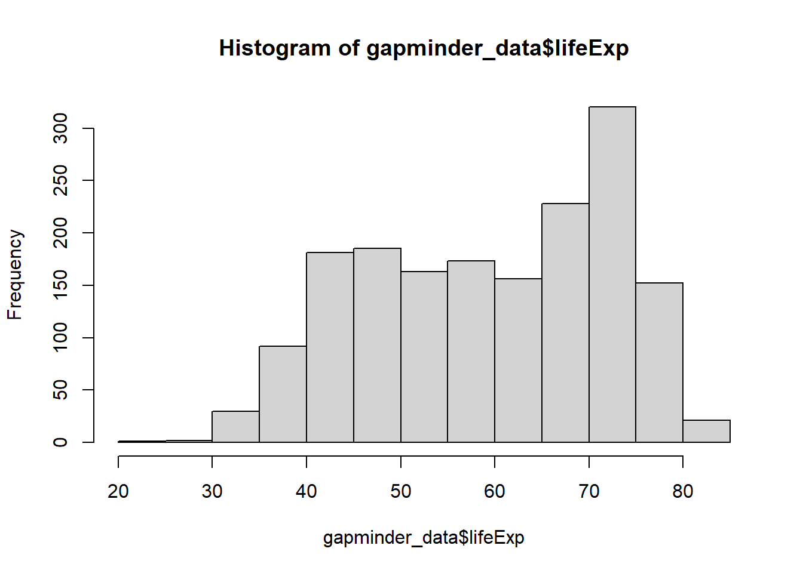
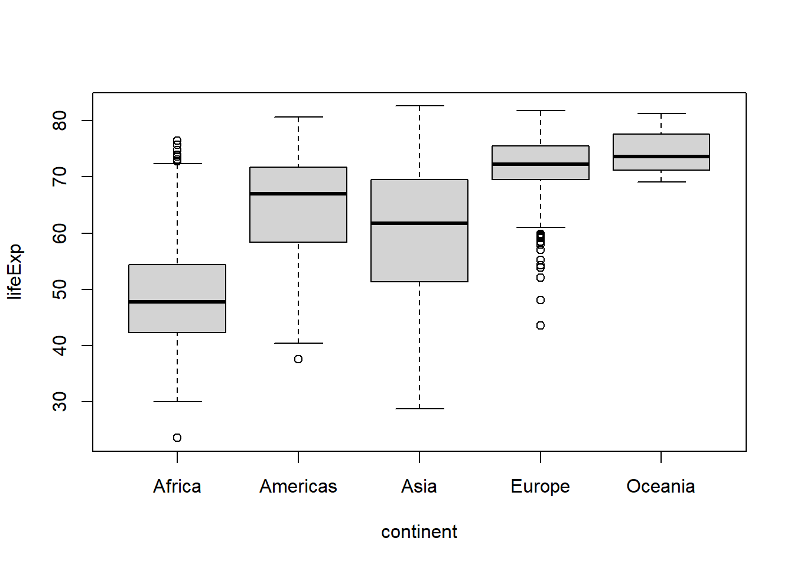
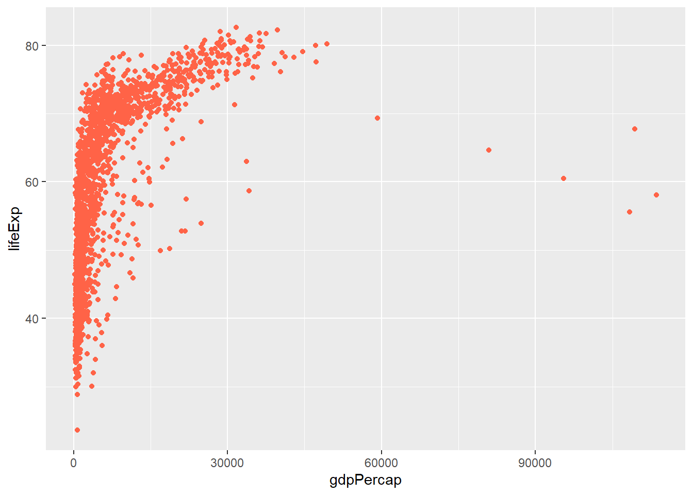
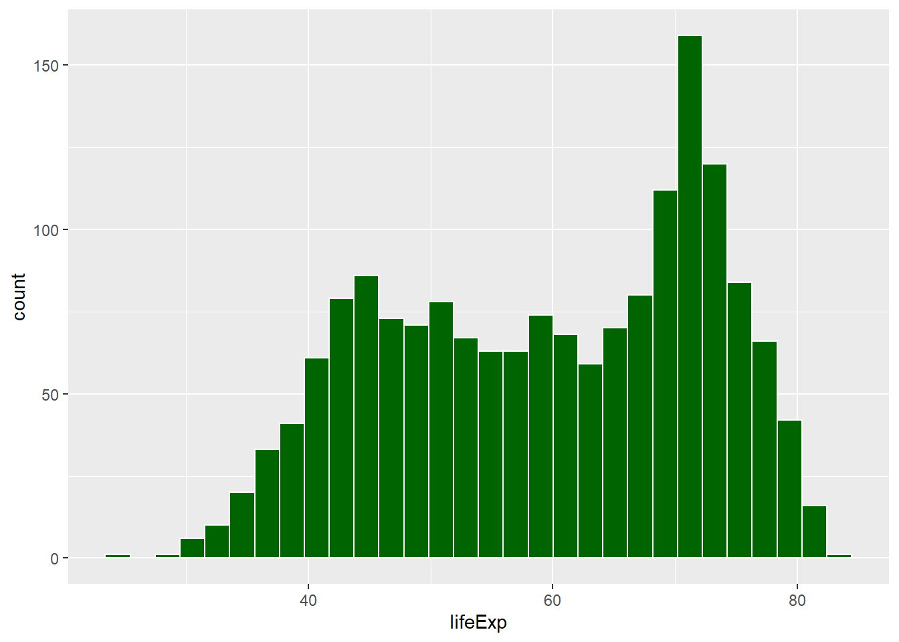
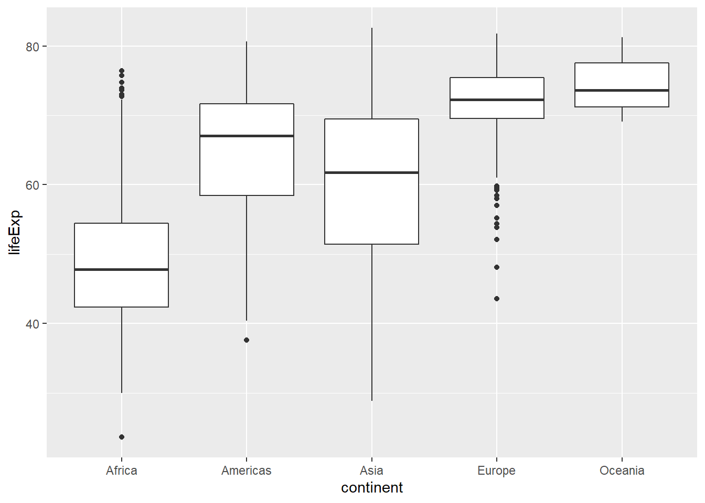
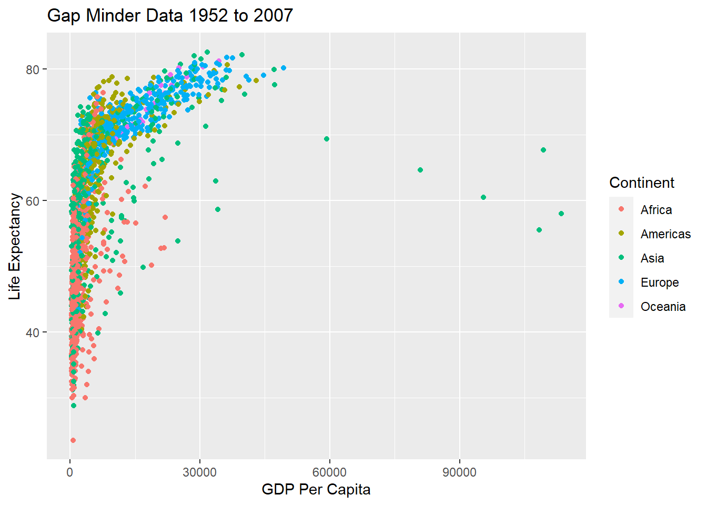

Import and check your data
Type the following line into your script file. Execute the command as you did in the previous module by placing the cursor anywhere on the line and typing ctrl-Enter (Windows) or cmd-Enter (Mac).
# Save an imported data frame into a named variable
gapminder_data <- read.csv("gapminder_data_2007.csv", stringsAsFactors = TRUE)
When imported into R, the data from the csv file are translated into an R object called a data frame. Data frames are simply tables, organised into rows and columns. The columns have names taken from the first row of the csv file, and each subsequent row of the csv file becomes a row in the data frame.
We store the data frame in a named variable so that we can refer to it later (i.e., perform analyses on it). We use the assignment operator, as we did in our previous module.
After storing our data frame into a variable, you should always check that the data have been imported correctly. Data entry errors can cause R to make the wrong assumptions about your data. If you have a column of numbers that contains even one accidental alphabetic character (typos do happen) R will consider the whole column to be strings. Later, R will give the wrong results when you perform statistical analyses on these data (or it will refuse to perform them at all).
Use the following commands to inspect your imported data:
# Write the first few lines of a data frame to the console with function head
head(gapminder_data)
#> country continent year lifeExp pop gdpPercap
#> 1 Afghanistan Asia 1952 28.801 8425333 779.4453
#> 2 Afghanistan Asia 1957 30.332 9240934 820.8530
#> 3 Afghanistan Asia 1962 31.997 10267083 853.1007
#> 4 Afghanistan Asia 1967 34.020 11537966 836.1971
#> 5 Afghanistan Asia 1972 36.088 13079460 739.9811
#> 6 Afghanistan Asia 1977 38.438 14880372 786.1134
# Write the last few lines of a data frame to the console with function tail
tail(gapminder_data)
#> country continent year lifeExp pop gdpPercap
#> 1699 Zimbabwe Africa 1982 60.363 7636524 788.8550
#> 1700 Zimbabwe Africa 1987 62.351 9216418 706.1573
#> 1701 Zimbabwe Africa 1992 60.377 10704340 693.4208
#> 1702 Zimbabwe Africa 1997 46.809 11404948 792.4500
#> 1703 Zimbabwe Africa 2002 39.989 11926563 672.0386
#> 1704 Zimbabwe Africa 2007 43.487 12311143 469.7093
# Display the number of lines, the column names, and the data type of each
# column, with function str (short for 'structure')
str(gapminder_data)
#> 'data.frame': 1704 obs. of 6 variables:
#> $ country : Factor w/ 142 levels "Afghanistan",..: 1 1 1 1 1 1 1 1 1 1 ...
#> $ continent: Factor w/ 5 levels "Africa","Americas",..: 3 3 3 3 3 3 3 3 3 3 ...
#> $ year : int 1952 1957 1962 1967 1972 1977 1982 1987 1992 1997 ...
#> $ lifeExp : num 28.8 30.3 32 34 36.1 ...
#> $ pop : int 8425333 9240934 10267083 11537966 13079460 14880372 12881816 13867957 16317921 22227415 ...
#> $ gdpPercap: num 779 821 853 836 740 ...
Each column in a data frame is either a Factor (i.e. a categorical variable) or is associated with a data type chr, int, or num. These indicate what kind of data R identified in the input file. Columns that are chr contain strings (characters), columns that are int contain integers (whole numbers) and columns that are num contain numbers with a decimal part. Always check that these properties of the imported columns are correct for your data set. If they are not, you must locate and correct any errors in your csv file.
You can see the same information about the structure of a data frame in the Environment panel of RStudio (upper-right of screen; Environment tab). When you successfully import a csv file into a variable with read.csv, the resulting data frame appears in the Environment pane. Click the blue arrow beside the object to display the details of its structure.
Creating graphs in R
There are a variety of complex analyses that we can perform on a data frame using R’s built-in statistical functions and those available in additional packages and libraries. We will explore many of these techniques in later modules. However, an effective first step in getting to know a data set is to generate plots and graphs to represent visually the patterns in the data.
Simple plots - the histogram
A histogram shows the frequency distribution of a data set. That is, it shows counts of the different values of the dependent variable (or ranges of values, for continuous variables). We generate this graph with function hist. The graph will be displayed in the Plots tab of RStudio’s lower-right pane.
# Histogram of life expectancy values from gapminder
hist(gapminder_data$lifeExp)

We see that the distribution of life expectancy is approximately bell-shaped, with many scores between 65 and 85, and a small number of extreme values greater than 80 or less than 30.
Boxplots
The boxplot allows us to compare distribution information between groups. For example, we can compare life expectancy for the different continents.
The R function boxplot accepts two arguments.
The first argument is the formula. This is a complex, yet very common, argument format for R statistical functions. The formula describes a linear model for a data set with the general structure: dependent or predicted variable ~ independent variables or predictors, using columns names from the data frame. The ~ (tilde) is read as “depends on” or “is predicted by”. For our example, we are interested in the way that life expectancy is dependent on the continent, so we specify our formula as lifeExp ~ continent. We will see more complex examples of the formula argument later in the semester.
The second argument to boxplot is the data frame.
boxplot(lifeExp ~ continent, gapminder_data)

Boxplots efficiently illustrate both the central tendency and the variability of a data set. Each grey box extends from the first quartile to the third quartile of its input values. The dark line across the box is at the median. The two thin lines outside the qrey box show the values of the minimum and maximum scores, excluding extreme outliers. If extreme outliers are present, they are shown as small circles. This figure clearly illustrates that, in the gapminder data, life expectancy – both central tendency and variablity – is not the same for all continents.
Plotting with ggplot2
The hist and boxplot functions are part of Base R. They are useful, but for more elaborate, publication-quality graphs, we can use the third-party library ggplot contained in package ggplot2. The ggplot library is a very popular data visualisation tool based on an elaborate symbolic system called the ‘Grammar of Graphics’.
The syntax of ggplot is complex, and we will concentrate on the foundations in this module. For additional detail, see the Data Visualisation chapter in the R for Data Science online text, at https://r4ds.had.co.nz/data-visualisation.html.
Semantics of ggplot
You can think of a ggplot graph as being built as a sequence of layers. On the bottom is the base of the graph, then the axes and the data are layered on, then titles and notations and other features. A ggplot command reflects this layered structure.
Building a graph
To use the ggplot library, we must install the ggplot2 package (once on a computer) and invoke the library command (for every RStudio session).
# Once on any computer
install.packages(ggplot2)
# Once for any RStudio session
library(ggplot2)
Every graph represents a data frame. The base part of any ggplot command is a call to function ggplot() passing in the data frame, assigned to function argument data.
# The ggplot base layer
ggplot(data = gapminder_data)

If you run this command from the RStudio console or an R script, the grey square shown above appears in the Plots pane. This indicates that ggplot is ready to draw a figure – this is the bottom layer of a ggplot graph.
To add x and y axes to the graph, we need to define the relationship between informational elements in the data set (the variables we want to plot) and visual elements in our graph (the axes). In ggplot this relationship is a mapping. To initialise a mapping, we identify a particular element of the graph (e.g. the x-axis) and assign a particular element of the data (e.g. a column in the data frame) to it. This assignment is called an aesthetic in the Grammar of Graphics, and in ggplot we use function aes() to specify aesthetics.
Imagine that we wish to make a graph showing the relationship between per capita GDP and life expectancy (two columns in gapminder_data). We map the first variable to the x axis (argument x) of our graph and the second to the y axis (argument y). This will add a new layer. We add this new information to the ggplot() base call as shown below. Note that we don’t need to use the $ operator here, as all column names in a ggplot command apply to the supplied data frame.
ggplot(data = gapminder_data, mapping = aes(x = gdpPercap, y = lifeExp ))

We have added a new layer to our graph with axes and grid lines. Note that the axes’ tic values are correctly formatted for the associated data and the data frame column names are used as the axis labels (we will see how to improve those labels later).
To add points to our graph, we specify a geometry (another term from the Grammar of Graphics). There are many, many available geometries in ggplot, corresponding to all the different sorts of graphs – scatterplots, bar plots, pie charts, line graphs, etc. – that you might wish to make. For our current graph, we wish to place a point at the intersection of per capita GDP (our x axis) and life expectancy (our y axis) for each row in the input data frame. To add this geometry to ggplot append geom_point() to your current ggplot command using the + operator. It is conventional to place each chunk of the ggplot command on its own line in the code.
# Add points (a 'geometry') to the graph
ggplot(data = gapminder_data, mapping = aes(x = gdpPercap, y = lifeExp )) +
geom_point()

This type of graph (usually called a scatterplot) illustrates the relationship between two dependent variables. Even from this very simple figure we can see that there is a general tendency for higher per capita GDP to be associated with higher life expectancy in the gapminder data.
Like most functions, geom_point can accept arguments that modify its behaviour. The argument colour determines the colour of the points to be drawn, and can be assigned any of R’s built-in colour names (call function colours() to list all possible values) or a hexidecimal RGB code (see for example, https://r-charts.com/colors/).
ggplot(data = gapminder_data, mapping = aes(x = gdpPercap, y = lifeExp )) +
geom_point(colour = 'tomato')

This livens up our plot, but it doesn’t acutally add any new information. It is better technique to use colour to represent another of our data variables. We might, for example, wish to use a different colour for each continent, to see how the relationship between GDP and life expectancy differs between continents. This requires defining a mapping between a visual feature (colour) and an element of the data set (column continent), so we initialise the mapping property with function aes, in our call to geom_point.
ggplot(data = gapminder_data, mapping = aes(x = gdpPercap, y = lifeExp )) +
geom_point(mapping = aes(colour = continent))

This graph illustrates clearly that, in the gapminder data, life expectancy and per capita GDP vary substantially between continents.
You should carefully compare the two preceding graphs. In the first, we simply set the colour argument of functiongeom_point. In the second, we set the mapping argument of geom_point using function aes. In the former graph, all points are the same colour. In the latter graph, the colour of each point depends on its continent value. That is, we have mapped colour to continent.
Choosing geometries
It is essential to select the correct type of graph (the correct geometry in ggplot) for the data pattern you wish to illustrate.
Assume, for example, that you wish to show the change in life expectancy across years, for the country of Denmark. First, we must select out only the rows for Denmark from our data frame. (We will consider selection in detail in next week’s module. For now, just note that between the square brackets we provide row and column criteria for selection, and an empty value for column means all.)
We will then pass the selected data to ggplot as before, specifying the mapping of the data to the x and y axes.
The graph will be illustrating a trend (change in a variable across time). Trend graphs are usually drawn with a continuous line between the plotted points. In ggplot, this is geometry geom_line.
The complete code is:
# Select all rows where the country is equal to Denmark. Select all columns.
denmark_data <- gapminder_data[gapminder_data$country == "Denmark", ]
ggplot(data = denmark_data, mapping = aes(x = year, y = lifeExp)) +
geom_line()

We can use ggplot to produce a histogram for life expectancy (as we did in Base R above) with geom_histogram. For histograms we only need to map the x axis, as the y axis represents, by default, frequency. We can enhance the plot’s appearance by initialising geom_histogram arguments colour which sets the border around the bars on the graph, and fill which sets the interior of the bars on the graph.
ggplot(data = gapminder_data, mapping = aes(x = lifeExp)) +
geom_histogram(colour = "white", fill = "darkgreen")

Similarly, we can reproduce the boxplot above with geom_boxplot. In Base R we used a formula to identify the dependent and independent variables for the boxplot. With ggplot, we use a mapping to assign the DV to the x axis and the IV to the y axis.
ggplot(data = gapminder_data, mapping = aes(x = continent, y = lifeExp)) +
geom_boxplot()

Exercise:
What would you predict to be the effect of swapping the values of x and y in the call to aes above? Test your prediction.
Refining the appearance of a plot
After we have built the foundation of our plot with data and geometry, we can add further layers to modify other visual features. For example, we can use function labs to set the axis, legend, and main titles of our plots. Consider the following enhancements to our figure illustrating the relationship between GDP and life expectancy by continent:
# NB: Multiple function arguments (as in labs below) can
# be placed on separate lines to improve readability
ggplot(data = gapminder_data, mapping = aes(x = gdpPercap, y = lifeExp )) +
geom_point(mapping = aes(colour = continent)) +
labs(x = "GDP Per Capita",
y = "Life Expectancy",
title = "Gap Minder Data 1952 to 2007",
colour = "Continent")

The code for ggplot formatting can get extremely complex, and the full functionality is beyond the scope of this module. In addition, there are many, many more geometries available, each with appropriate arguments and mapping options.
The formal documentation for ggplot can be found at https://ggplot2.tidyverse.org/index.html. If you prefer tutorials and galleries, there are many available online. Two good places to start are http://www.cookbook-r.com/Graphs/ and https://www.r-graph-gallery.com/.
Saving ggplots
You can save figures made with ggplot to image files, which can then be used in documents generated in MS Word or other text editors. We first save the output of our ggplot command into a named variable (to R a ggplot is a data object just like a number or a string). We then use function ggsave to export out plot as an image file. You specify the image format by supplying an outfile name with the corresponding file suffix (e.g. .jpg or .png). By default, the file is saved into the working folder (in our case, the folder containing our csv and script files).
# Save a ggplot to a variable. The syntax of the gpplot command is unaffected
gdp_lifeExp_plot <- ggplot(data = gapminder_data, mapping = aes(x = gdpPercap, y = lifeExp )) +
geom_point(mapping = aes(colour = continent)) +
xlab("GDP Per Capita") +
ylab("Life Expectancy") +
ggtitle("Gap Minder Data 1952 to 2007")
# Export the variable as an image file. Provide the file name and the ggplot object
ggsave(filename = "gdp_lifeExp_plot.png", gdp_lifeExp_plot)
#> Saving 7 x 5 in image
